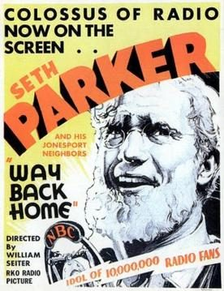

Way Back Home

Starring: Phillips Lord, Frank Albertson, Bette Davis
Director: William A. Seiter
Writer: Jane Murfin
Producer: William LeBaron
Way Back Home is a 1931 American pre-Code drama film directed by William A. Seiter and starring Phillips Lord, Effie Palmer, Frank Albertson and Bette Davis. The screenplay was written by Jane Murfin based on characters created by Lord for the NBC Radio show Seth Parker.
Trivia
- Phillips Lord had created the character of preacher and folksy philosopher Seth Parker for a Sunday night series broadcast by NBC Radio.
- Berman negotiated with Universal Pictures for the loan of Bette Davis, whose contract with the studio had been recently renewed following her completion of Waterloo Bridge, and Carl Laemmle, Jr. agreed to loan her for a fee of $300 per week.
- Davis was pleased with the attention paid to her by cinematographer J. Roy Hunt.
Filming Locations
- California
- Much of the rural farm setting was filmed at the Hunsucker Ranch in Scotts Valley, a well-known filming location at the time.
Previous Showings
2 Runs • 1 Festival
All runs on record (2):
- April 24 - 25, 2008w/ So Big
- April 24 - 25, 2018Bette Davis Complete early films: 1931 - 1938w/ So Big